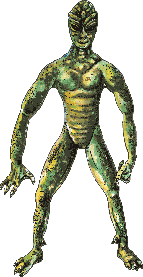
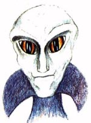
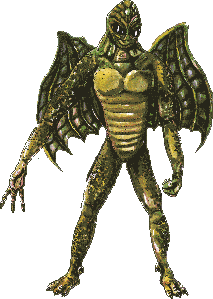
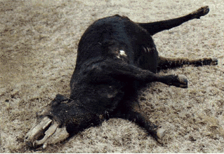
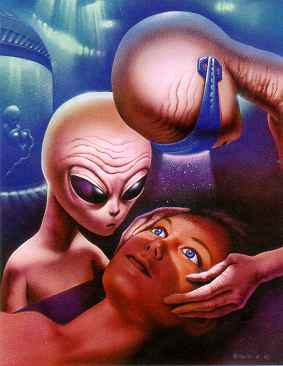
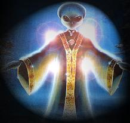

The Greys
The GreysThe world is slowly being conditioned to accept the presence of alien beings in our reality. Fifty years ago, people committed suicide rather than face the possibility that the Earth had been visited by aliens from outer space. The radio broadcast of "War of the Worlds" revealed the hysteria which the general populace would experience if faced with that scenario. For that reason, the powers that be have adopted a policy of slow desensitization to the alien presence and over a fifty year time span have made the face of the alien gray a fashion accessory.
Exactly who are these alien entities and what is their purpose in visiting our planet? Where do they come from? How did they get here? Above all else, are they angels or benevolent space brothers, here to assist us in our ascension or are they demons or cosmic cattle ranchers, herding us to the slaughter?
Before we analyze the specific alien groups, remember that the generalizations we present do not necessarily apply to each individual member of an alien species, unless that species shares a collective consciousness (which the majority of the ones we will discuss do). It would be irrational to stereotype the motives of an entire race of individuals just as it is irrational to pre-judge all humans as being "sinful," or to suggest that all members of a race or skin color are lazy or evil. In the absence of a collective consciousness it is best to apply the admonition "by their fruits you will know them" when judging the actions of the individual being.
In order to judge actions we must first establish a standard of measurement to determine relative "good" or "evil." As Luciferians and human beings, the standard we raise is that of "life, liberty and happiness of the individual." Placing the value of self above the value of the collective or the group. In this manner we can know if the actions of an entity are good (contribute to the happiness and liberty of the individual) or evil (disregard the individual, enslaving him to the demands of the whole or the will of "The One" i.e., God). This standard is more fully explained in A Brief Overview of Objectivism and Freethought
This alien race made its first appearance on Earth millions of years ago. Coming from a planet in our own solar system which orbits the sun once every few thousand years (also called "the 12th planet"), they have genetically altered their DNA to stop the aging process and appear to be "immortal."
They mixed their DNA with primitive man in order to create a slave race to assist them with their mining efforts on this planet. Some of the members of this race attempted to aid the humans, giving them the ability to reproduce and attempting to remove the aging process from their DNA. These helpers of mankind rebeled against the plans of the leaders of the Elohim who wanted to keep man subservient. In doing this, they, along with any who attempt to free mankind from the enslavement of the manipulators of mankind, were labeled "EVIL." One of the few alien species we can trust to assist us in our battle for liberty are these rebel "Sons of God" (Genesis 6:4) or Nordics who have broken from the reigns of the collective and illuminated the path of rational self interest for man.
The original Elohim used genetic and social engineering to attempt to keep man subservient. After realizing that man could become a threat to the agenda of the Elohim at the tower of Babel, individual members of the Elohim built congregations and cities of followers (slaves). The recruitment of Abraham in the Bible by "the Lord" (Genesis 12:1-3, 17:7-8) was an example of how the Elohim chose humans and agreed to "be their God." Numerous other religious systems of belief were established by the Elohim in order to keep man divided against himself and thus unable to work together for their own betterment. For example, the "angel" Gabriel established the Jewish religion and then turned around and established the rival religion of Islam. The gods of the Hindus, Greeks, Summerians, American Indians and others were also established by the Elohim.
The Elohim are members of the Galactic Confederation, a group of similarly oriented alien races, whose mission it is to align all planetary races with the will of the collective or "The One." Their ultimate agenda is altruistic obedience to the rule of The One. The Bible speaks of a time when the entire world will be subject to the will of The One ("every knee shall bow to me" - Romans 14:11, Isaiah 45:23). Strict obedience without question is the hallmark of "righteousness" according to the writings of the Elohim. As we show throughout our web site, the will of the Elohim does not support the good of the human race and must be aggressively resisted if we are to survive.
The Draconians are an extraterrestrial race of reptile which come from the Alpha Draconis star system. In general the draconians are intergalactic invaders, seeking out and infiltrating into the societies of other life forms. They prefer to manipulate society from behind the scenes and will openly invade and conquer only when they become threatened by the technological advancement of their prey. It is highly likely that some of the Draconians work alongside of the Interdimensional Reptilians as allies. Both types of alien entities are able to utilize the psychic energies emitted from the brains of humans during intensely emotional experiences. The reptilians of both this dimension and the 4th dimension feed off of fear and panic from humans. They also possess the ability to confuse humans by projecting a mental image, making themselves appear human (as Men In Black) or clouding the memory of any who encounter them.
When the Draconians predict that the civilization they have infiltrated is approaching the state of evolution where their technological ability makes the reptiles' covert operations subject to compromise, they launch an overt invasion fleet in the form of a Planetoid/Asteroids base station or mother ship. (Note: Some people theorize that the reptilian mother ship locates and follows closely behind comets heading in the same general direction, using the gravitational field to pull the planetoid along through space. The comet's body also acts as a stellar debris impact shield and prevents any approaching civilization from observing their mother ship's advance. The Heaven's Gate cult misinterpreted channeled alien propoganda and believed that the comet Hale Bopp was this invasion fleet. For more details see Jesus of Borg)
In between invasions, the majority of the reptilian population on the mother ship live in a state of hibernation. A contingency of reptilians manage the daily operations of the craft and maintain hibernation chambers while awaiting the invasion order. The reptilians on the planet's surface ensure the continued secrecy of their presence, carry out abductions of various life forms on the surface of the planet, and monitor the technological advances of the surface inhabitants. They also introduce their reptilian genetic code into whatever species displays traits they want to manipulate, and initiates a program of genetic crossbreeding. Some of the species of Greysand humanoid Nordics have been invaded and assimilated in this manner.
From their underground bases, they set the stage for the mother's ship invasion by establishing a network of human-reptilian crossbred infiltrates within various levels of the surface culture's military industrial complexes, government bodies, religions, UFO/paranormal groups, and fraternal (priest) orders, etc. These crossbreeds, some unaware of their reptilian genetic "mind-control" instructions, act out their subversive roles as "reptilian agents", setting the stage for an reptilian led alien invasion. Just prior to planetary approach, the large reptilian population aboard the planetoid awakens from their hibernation and prepares for battle. When the invasion takes place, it is from above and below the planets surface. Strange craft, piloted by reptilians, greys and human-reptilian agents, descend from the clouds while others ascend to the skies from the underworld of caverns and sub-cities, overwhelming the surface cultures in a totally unsuspecting manner.
The reptilian species, like other races which share a collective consciousness, communicate telepathically. Their advanced telepathic ability allows them to be able to utilitze energies emitted by the brains of other species.
At least one of the Draconian races possess leathery wings which have been mistaken for hoods or cloaks by abductees. This race stands around 8 feet tall, dwells underground and comes out at night. They have been labeled "mothmen," and is the source for mythologies concerning angels, demons, vampires, gargoyles, valkyries and other winged beings.
Different extraterrestrial reptilian species have different agendas but the majority of them focus on domination and exploitation of alien races and their planetary resources. Their viscious hostility and blatant disregard for the individual rights of others makes them a mortal enemy to mankind.
Interdimensional reptilians reside outside of our physical plane or dimension. They are composed of matter which vibrates at a frequency which is out of synch with the world our senses can perceive. It is theorized that this altered vibrational frequency (sometimes called "sub-space") is an astral plane where energy demons dwell or is where the energy from our soul matrix goes after our physical bodies die. In the absence of further evidence we will merely report these theories and not speculate on their validity.
The interdimensional reptilians are able to alter the vibrational frequency which seperates our dimension and theirs (also called the 4th dimension) in areas where nuclear testing has taken place due to alterations in the fabric of time-space. Some groups of interdimensional reptilians are able to freely enter and leave our dimension through portals that they create. Some of these portals have been torn by the electromagnetic pulse (EMP) which accompany nuclear weapons testing. The appearance of interdimensional reptilians and their vehicles around nuclear test sites supports this premise. It is also possible that extraterrestrial reptilians are using the 4th dimensional vibrational flux as a means of transportation. Other groups of interdimensional beings are unable to enter our world as easily and must rely on 3rd dimensional agents to affect change in this dimension.
The greatest threat from the interdimensional beings centers on their need for the energies provided from emotional responses and their ability to manipulate the suggestive human consciousness. Through tools such as religion, nationalism, racism, and other emotionally charged conditions, they are able to provoke humans through stress, anger, guilt, and most of all FEAR, to engage in warfare against their fellow man, creating a vicious cycle of even more intense human emotions through the tragic results of these conflicts. The increasing number of senseless shootings at schools, day care centers and postal facilities is a direct result of the hunger of the reptilians. The emotional responses to reptilian orchestrated religious worship, global conflict, genocide, drug usage, sexual perversions and violence in general all provide these "psychic vampires" or "energy leeches" with a veritable cornicopia of energy to feast on. It's time we closed the buffet line.
65 million years ago the Earth was struck by an asteroid which brought about the extinction of the majority of the world's living dinosaurs. There were, however, some species which escaped extinction by dwelling underground in caverns and labyrinths beneath the earth's surface. The image on the left is what modern science theorized one of these evolved reptiles might look like today. This creature is strikingly similar to ones which have been identified as living in underground bases in New Mexico and across the world.
The velociraptor received global attention with the success of the "Jurrasic Park" movies. This dinosaur was able to communicate via ultrasonic means and may have possessed a form of "telepathic" capability. If the cunning velociraptor has been evolving underground for the last 65 million years, it is only reasonable that man's legends would contain references to dragonmen or serpentmen. The role and agenda of the terran reptilians in the cosmic conspiracy is currently the subject of much debate.
The GreysThe Zeta Reticuli Greys originate from Zeta Reticulan, a star system which is near the constellation Orion. The average between 3 and 4 feet in height. Whereas humans have evolved from primates, the Greys have evolved from a cetacean or dolphin like life form. Just as humanity was genetically altered by the Elohim to be used as slaves, the Greys were genetically altered and advanced for the purposes of their "Gods" who we will call "The Masters." The Greys were not as fortunate as humanity however, because there was no rebel activity to liberate them from the grasp of the collective will of the Masters as there was with us.
The Masters mixed their DNA with that of the evolving cetaceans from Zeta Reticulan and created mules which were unable to reproduce (just like Adam and Eve in the Garden of Eden). They also genetically altered the digestive systems of the Greys to make them more efficient as slaves. The Greys no longer have a functional reproductive or digestive tract because of the genetic manipulations of the Masters. They now absorb nutrients and secrete wastes through their skin. This genetic variance is of great value to the Masters since much less space is required for food storage and waste processing which makes them ideal for use as slaves who are engineered to work in the limited area of a spacecraft. The nutrients the Greys require are found in high concentrations in mucous membranes which is why they have been mutilating cattle (and humans to a lesser known degree). To "eat" they soak in vats of nutrients which are full of the secretions from human and animal body parts.
To reproduce, the Greys must be cloned. Because DNA begins to breakdown after being repeatedly cloned, in order for the Greys to keep their species from dying, they must integrate new strands of DNA into their own. Until they are able to create a hybrid Grey life form which possesses the ability to reproduce, they will continue to require outside sources of DNA to maintain their species. The Greys have been abducting humans and performing experiments on their reproductive systems in order to create a strain of Grey with reproductive capability.
From the time of their enslavement, the Greys have been at the mercy of more technologically advanced species. One of these species is the Draconian reptile race. The reptilians conquered the Zeta Reticli Greys centuries ago and forced them into slavery. The reptilians created a robotic race of Grey clones by taking advantage of the telepathic capability of the Greys. By implanting telepathic amplifyers into the brains of the Greys they were able to tie the minds of the Greys into an artificial central computer. This created an artificially controllable "collective consciousness" whereby the Greys can be monitored and controlled by their Masters. The mother brain for the Greys which are in our solar system was what the Russian Phobos probe uncovered in 1989, leading to the destruction of that probe by the Grey defense system.
The Zeta Reticuli Greys have been in communication telepathically with human channelers, feeding them conflicting propoganda to mislead trusting humans into accepting them as our "saviors." They are the agents of their Masters, deceiving humanity through religious "visions," (such as at Fatima) prophecies and miracles in an attempt to gain our trust. Once the reptilian mother ship arrives from Zeta Reticulan, these same Greys will appear as ANGELS, inviting those who desire to escape the destruction of the earth into the clouds where they will meet with their "master;" JESUS. Promising a NEW AGE of peace and harmony with all of mankind attached to the ONE just as they are, their true goal is the annihilation of human individuality and its unpredictability. Since they do not possess emotions, they see human unpredictability as their greatest threat. The assimilation of individuality into the collective of THE ONE must be resisted if our race is to remain free.
These small aliens have been the subject of tales of fairies, gnomes, elves, pixies, and other "little people." They come from the same genetic roots as the Zeta Reticuli, but little more is known about their race. They possess the technological ability to alter the fabric of space, giving them the ability to pass through solid matter and alter the relative size of objects. They are usually between 6 and 18 inches in height.
This race of Greys stands between 7 and 8 feet tall (similar to the Nephilim) and they tend to have a more developed nose than other Grey species. When they are observed they appear to be in charge of groups of shorter robotic Greys. Some abductees have detected emotional responses (sympathy, loathing, disgust, etc.) coming from these tall beings. The Orion Greys have also been seen working alongside various reptilian species. As in all situations, the actions of individual members of a species cannot be taken to reflect the intent of all members of that species. The evidence suggests that some members of the Orion Greys may be sympathetic to the plight of humanity and may offer technological assistance in the upcoming alien confrontation.
There are several human-like species which interact with humanity. These include the Elohim, Pleiadians, Venusians, Vegans, Lyrans, Arcturians, Orions, Sirians, and others. Our race shares a common genetic ancestry with many of these species.
There have been numerous mental or "spiritual" contacts between these supposed friends of man. Some claim to be members of a galactic federation, whose purpose is to protect all life and aid in our ascension to the next age. If they are truly the galactic policemen they claim to be, then by their fruits we will know them. If they are merely another ploy by an invasion force, we will also be aware of, and prepared for, that possibility. Our ancestors tell of a race of human nordics (the ancestors of the Scandinavians) who escaped the wrath of the Elohim at the time of the Flood by leaving the planet with a group of Nefilim. These Nordics may be our greatest allies in the approaching reptilian invasion. Time will only tell.
When analyzing the motives of these alien races, we must remember to judge their activities based on whether they are supportive of our individual rights and our quest for life, liberty, and happiness, or whether they desire to enlist us in their quest for oneness. We cannot allow the glitter of membership in the Intergalactic Federation to distract us from our own best interest. Objectivism must be our standard. Altruism and sacrifice must not replace rational self-interest. Repeatedly, the lure of ONENESS is used by tyrants to stifle the questions of the rational few. It is for this same reason that the Bible commands us not to question God. The common theme of the "spiritually concerned" aliens is this loss of individuality and reasoning ("Lean not on your own understanding." - Proverbs 3:5). Anytime we are approached by anyone who wants us to join their collective, we must remember the ultimate goal of this collective is to create a void of sameness where the only will which exists is that of the collective ONE, and the elite few in charge are the dictators of that will. Question Authority. Resistance is NOT futile.
Return to the Luciferian Liberation Front's Main Page.
E-Mail your questions and comments.